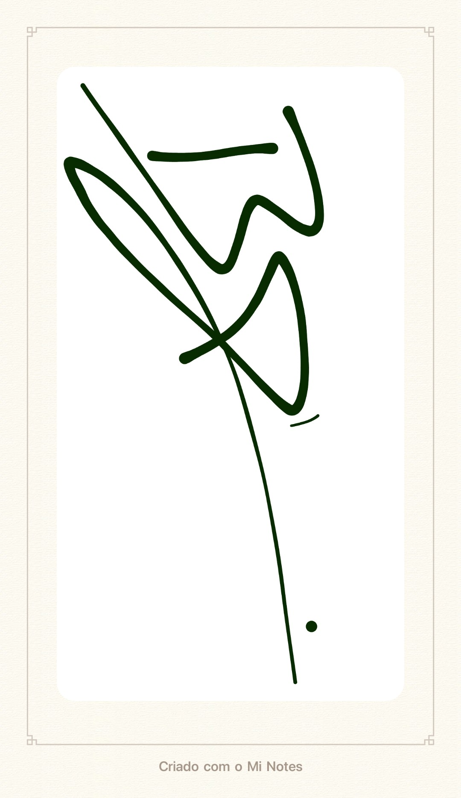

O BEJOTA
João Victor, conhecido como "BJ", é um artista emergente no cenário do rap. Buscando trazer criticas à realidade, filosofia boêmia em ritmos versáteis e únicos, ele mistura os verdadeiros elementos da musica do Hip Hop: Ritmo e Poesia.
Nascido na pequena cidade de Águas Vermelhas, em 2005, cresceu vendo suas inspirações, como Dr. Dre, Chris Brown, Emicida, Racionais e BK, fazendo o que hoje ele pode fazer, trazer a realidade através das rimas, inspirar e acrescentar à cultura negra, Hip Hop e o cenário do Rap. Apesar de pouco tempo ativo, já demonstrou criatividade, lirica e compromisso com um formato orgânico nas redes sociais.
BJ é mais que um rapper, é uma personalidade que com temperança promete ser um dos maiores artistas do seu nicho.
"Máximo esforço pra ter reconhecimento, com tempo vem o talento e com talento vem sucesso e ganhos [...] o tempo retarda mas nunca falha"
Trecho tirado de "EU (não) SOU REFERÊNCIA" do rapper.
